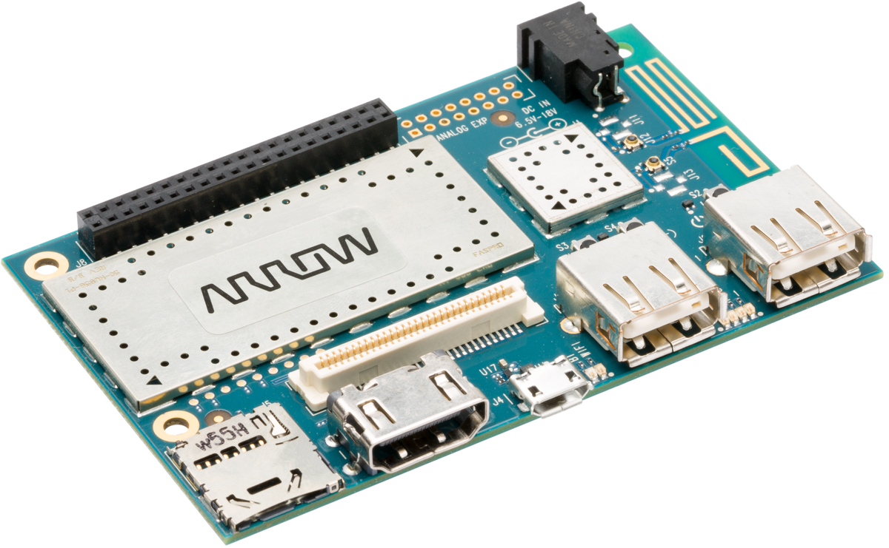

Arrow DragonBoard 410c (arrow-db410c)
|
 DragonBoard 410c | |
| Manufacturer | Arrow |
|---|---|
| Name | DragonBoard 410c |
| Codename | arrow-db410c |
| Released | 2015 |
| Category | community |
| Original software | Android / Linux / Windows IoT Core |
| postmarketOS kernel | Mainline |
| Hardware | |
| Chipset | Qualcomm APQ8016 Snapdragon 410 |
| CPU | 4x 1.2 GHz ARM Cortex-A53 |
| GPU | Adreno 306 |
| Display | HDMI |
| Storage | 8 GB |
| Memory | 1 GB |
| Architecture | aarch64 |
{kind=link}
| USB Networking |
Works
|
|---|---|
| Flashing |
Works
|
| Touchscreen |
Unavailable
|
| Display |
Works
|
| WiFi |
Works
|
| FDE |
Works
|
| Mainline |
Works
|
| Battery |
Unavailable
|
| 3D Acceleration |
Works
|
| Audio |
Works
|
| Bluetooth |
Works
|
| Camera |
Unavailable
|
| GPS | |
| Mobile data |
Unavailable
|
| SMS |
Unavailable
|
| Calls |
Unavailable
|
| USB OTG |
Works
|
| NFC |
Unavailable
|
| Accelerometer |
Unavailable
|
|---|---|
| Magnetometer | |
| Ambient Light | |
| Proximity | |
| Hall Effect | |
| Ir TX |
Unavailable
|
|---|---|
| TrustZone | |
|
This device is based on Snapdragon 410. See the SoC page for common tips, guides and troubleshooting steps |
DragonBoard 410c is a single board computer designed by Qualcomm and manufactured by Arrow. It's a reference design for apq8016e devices and as with many other DragonBoards it has great mainline support. The board is based on the 96Boards CE specification. A lot of the documentation for the board and it's apq8016e platform is available on the Qualcomm Developer Portal. The availability of this documentation makes apq8016e, db410c and all other msm8916 based devices into a very good mainlining target. Some other manufacturers (e.g. Geniatech) make other sbc's based on the db410c design and those boards can be fully or in most compatible with this port. Boards that are known to be compatible include: Geniatech DB4 (v1).
Contributors
Users owning this device
How to enter flash mode
At the moment, the recommended way is to flash postmarketOS to a SD card. The SD card needs to be manually prepared with the bootloader and necessary firmware. Then you can boot the board into Fastboot mode and flash postmarketOS normally from there.
Prepare SD card
| WARNING: The SD card will be completely erased! Make sure to backup important data before you proceed. |
First, connect the SD card to your PC and find out the device name (usually either /dev/sdX or /dev/mmcblkX). lsblk might be helpful. Make sure it is the correct device, since it will be entirely erased by the following commands.
Download https://releases.linaro.org/96boards/dragonboard410c/linaro/rescue/latest/dragonboard-410c-bootloader-sd-linux-*.zip and unpack it.
$ git clone https://git.linaro.org/landing-teams/working/qualcomm/db-boot-tools.git $ cd db-boot-tools $ SD_CARD="/dev/sdX" # Replace this by your device name $ sudo ./mksdcard -o "$SD_CARD" -p dragonboard410c/linux/partitions.txt -i ../dragonboard-410c-bootloader-sd-linux-*/ -s $(($(sudo blockdev --getsz "$SD_CARD") / 2))
Writing the SD card will take a while. Then insert it into the DragonBoard 410c and turn it on. Now you can connect a micro USB cable to get access to Fastboot.
If you want to access Fastboot again later (after flashing a boot image), press Volume Down before turning on the device.
Installation
Follow Qualcomm_Snapdragon_410/412_(MSM8916)#Installation. Note that lk2nd is not required for the Dragonboard 410c, but the bootloader installed above behaves essentially the same way.
| Note: On the first boot the file system will be extended to span the entire SD card. This may take several minutes. You can see this if the disk LED (3) is active. |
Audio
See Qualcomm_Snapdragon_410_(MSM8916)#Audio.
To play via HDMI, use set _verb HDMI or select HDMI in the PulseAudio mixer.